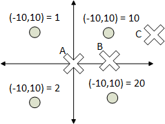

Composite Driving Layer
The composite driving layer sets the PV values which will make the moves happen.
The layer consists of drivers which take setpoint values from components and push these values into a PV wrapper, and conversely take readback values from the PV wrapper and push them into the components. It also handles moving multiple axes “synchronously”, which for the moment means concurrently i.e. speeds are set so axes finish moving roughly at the same time, but no continuous synchronization in real time.
For more information on implementation specifics see the Reflectometry Configuration page:
Synchronisation
To enable synchronisation of axes, this layer:
can report the minimum time taken for individual IOC driver to finish a move
can be told to make a move in a given duration.
When calculating the time for each axis to finish a move, the backlash distance and speed is taken into account to try to be accurate even if the backlash distance makes up a considerable part of the total move duration for the axis (ticket). There are several limitations with the system:
The acceleration time of the motors is not taken into account, so calculations will be slightly inaccurate
When starting a move from within backlash range the speed cannot be controlled, so unless the backlash speed is very slow and is the limiting factor on the entire move, this motor will finish its move earlier than the others.
In order to avoid stalling, each axis has a minimum velocity stored in the PVWrapper. An axis will not move slower than this, even if instructed to do so as part of a synchronised move, meaning it might reach its target quicker than intended. However we only expect this to happen in very specific cases for very small moves thus the difference should be negligible. The minimum velocity is set to:
VBASof the underlying motor by defaultVMAX/min_velocity_scale_factorifVBAS <=0.min_velocity_scale_factoris an optional argument on the PVWrapper (defaults to 100)
The user can turn this off in the configuration file. In which case the time reported to finish a move is 0, and the axis’s speed is not changed on move.
Synchronisation in the configuration files defaults to true, but can be set on a driver via the synchronised argument.
Out Of Beam Positions and Parking Sequences
Any IOC Driver can specify out-of-beam positions, which define where a component should be parked along its movement axis if it is set to be “Out Of Beam” via an InBeamParameter. A driver can have an arbitrary number of out-of-beam positions. Which one is chosen depends on where the y height of the current beam path intersects with the movement axis of this component. Since in some instances, the beam can intersect with the entire range of a component’s movement axis, this is done to ensure that component does not block the beam while parked. It is also possible to have the park position as a position offset from the beam, e.g. for INTERs mirror/guides which when out of the beam must track the beam to remain guide. In addition to this the user can supply a parking sequence which will cause the instrument to park and unpark a component using the supplied positions.
Out-of-beam positions are defined via the OutOfBeamPosition class. Example:
park_high = OutOfBeamPosition(position=20)
park_low = OutOfBeamPosition(position=-10, threshold=15, tolerance=0.5)
driver = IOCDriver(comp, the_axis, out_of_beam_positions=[park_high, park_low])
position: the position along the movement axis where this component should be parked. Any engineering correction will be applied implicitly to this value; if this is in offset mode this is the offset from the beamthreshold: if the interception between the beam path and the height axis is greater thanthreshold, thispositionshould be chosen for parking. If this isNone, this signifies that this is the only, or default out-of-beam position, i.e. the out-of-beam position to use if no other threshold is met. (defaults toNone)tolerance: the tolerance aroundpositionat which this component is still considered “out of beam” (defaults to1)is_offset: ifTruethen the position acts as an offset from the beam and final motor set point (defaults toFalse)
So moving comp out of the beam while the beam intersects the axis at a height below 15 will move it to park_high = 20. If it is moved out of beam while the intersection is above 15 (let’s say for a high theta angle), it will instead move to park_low = -10, in order to not block the beam while parked.
You can also use this short-hand for very simple, single out of beam positions (ie. no sequences or thresholds, you just want to move to -10 in this case as it’ll always be out of the beam):
driver = IOCDriver(comp, the_axis, out_of_beam_positions=-10)
If no out-of-beam positions are defined for a driver, it is always considered as being “in beam”.
Parking sequences are defined using OutOfBeamSequence. This has exactly the same parameters as out of beam except that the first argument is a list of values. The list of each parking sequence for a component, you can have one for each axis, must be the same length or not exist. You may have None’s at the start of the sequence to indicate that the component should not move from its current position. Example:
driver = IOCDriver(comp, ChangeAxis.HEIGHT, out_of_beam_positions=[OutOfBeamSequence([0, -10, -10)])
driver = IOCDriver(comp, ChangeAxis.PHI, out_of_beam_positions=[OutOfBeamSequence([None, 0, -20)])
This would mean that when this component parked the following happens:
Height set to 0 but phi would not move
Height set to -10, phi set to 0
Height set to -10 (no movement), phi set to -20
Unparking would be this but in reverse.
Engineering Offset
Engineering offsets correct the value sent to a PV because of inaccuracies in the engineering. For instance, if we set theta to 0.3 we will be setting the height of the jaw so that the jaws centre is in the middle of the beam. However, because of needing to tilt the jaws and the centre of rotation not being in the middle of the jaws, we need to add a correction to the geometry of 0.1mm. The best place to do this is at the point at which the value is sent to the driver. The form of the corrections can multiple but we will start by catering for:
pure function based on the value and values of other components
an interpolated table based on a set point
Note that in this case, the zero motor position is no longer necessarily zero, while this does not affect the maths, users will probably want to ensure that in the straight-through case the motor is zero.
The configuration for this is to add an engineering offset object to the IOCDriver. The engineering offset object will do the following:
Convert readbacks from the IOC PVWrapper to the uncorrected value
Convert set-points from the component to the correct value that get sent to the PV
On initialisation to convert PV to set-point value to be initialised
This is hard because to calculate the value you need a beamline parameter value which is not yet set because it is being calculated. To avoid this we introduce the constraint that engineering corrections may only be functions of an autosaved beamline parameter or the motor position/PV on which the driver is based.
Types of Engineering Corrections
No Correction
Doesn’t perform any correction. Is useful when you want to define a correction but have it do nothing.
Constant Correction
Add a constant on to the value, probably better to redefine zero on the axis. Add this into the configuration file to the driver:
add_driver(AxisDriver(
component, ChangeAxis.POSITION,
PVWrapper,
engineering_correction=ConstantCorrection(value))
where value is the amount you want to add onto the axis when setting a set point.
Interpolated Data Correction
This will perform a correction based on a table loaded from disc. It will perform linear interpolation between the points in the datafile to derive the correction. Outside of the table of data no correction is set. To use this add to the configuration:
theta_param_angle = add_parameter(AxisParameter("THETA", theta_comp, ChangeAxis.ANGLE))
...
add_driver(AxisDriver(
component, ChangeAxis.POSITION,
PVWrapper,
engineering_correction=InterpolateGridDataCorrection(filename, theta_param_angle))
In this example, theta_param_angle is being used as the interpolation variable. The filename in the name of a file in the configuration directory (C:\Instrument\Settings\config\<instrument>\configurations\refl\) which contains the points. The format is:
Theta, correction
1.0, 1.2
1.01, 3.4
...
2.5, 4.6
Where the header Theta, correction matches with the name of the beamline parameter (first argument in XXXParameter). If you want to use the value sent to the displacement driver instead use DRIVER in the header.
If you want to do multi-dimension interpolation then your InterpolateGridDataCorrection object should have all beamline values in it that are needed, e.g.:
InterpolateGridDataCorrection(filename, theta_param_angle, sm_angle_param))
and the data file should have a similar header and data:
Theta, smangle, correction
-10, 10, 1
10, 10, 10
-10, -10, 2
10, -10, 20
The data points do not have to form a square.
If we take the above example we mark these four points on a graph:

At point:
A (0,0) = 8.25. Point is equidistant from all points so is the average of all points.
B (10,0) = 15. Point is halfway between the two right-hand points so is average of right-hand points.
C (12,3) =0. Point is outside of the area made by the points and so its correction is 0.
The algorithm used is the linear version of griddata from scipy.
User Function Engineering Correction
To apply a user function engineering correction yo an axis we must first define the function in the configuration file. In this example case, we have a function which depends on a single beamline parameter, theta:
def my_correction(value, theta):
...
return calulated_offset
When called by the reflectometry IOC this function will be given:
-value which is the position that would be sent to the axis if the correction was 0
-theta which is the value of the first beamline parameter set in UserFunctionCorrection
If there are more beamline parameters set in UserFunctionCorrection these would be additional arguments. The function should return a correction which will be added onto the value before being sent to the PV.
The next step is to add the engineering correction to the IOC driver. We show the definition of the theta beamline parameter to make it clear what the arguments are:
theta_param_angle = add_parameter(AxisParameter("THETA", theta_comp, ChangeAxis.ANGLE))
...
add_driver(AxisDriver(
component, ChangeAxis.POSITION,
PVWrapper,
engineering_correction=UserFunctionCorrection(my_correction, theta_param_angle))
The UserFunctionCorrection takes:
user_correction_function: reference to the function to usebeamline parameters: 0 or more beamline parameters whose set point readback values should be passed to the
user_correction_function
Select a Correction Base on a Mode
This is an engineering correction which will select another correction based on the mode that the beamline is in.The correction is created with:
ModeSelectCorrection(default_correction, corrections_for_mode)
where:
default_correction: is an engineering correction which is used if there are no modes in thecorrections_for_modedictionary which match the current modecorrections_for_mode: is a dictionary of the mode name against the correction that should be used for that mode
Example:
add_driver(AxisDriver( component, ChangeAxis.POSITION, PVWrapper,
engineering_correction=ModeSelectCorrection(ConstantCorrection(1), {"NR": UserFunctionCorrection(my_correction), "PA": ConstantCorrection(-0.2)}))
Here the correction will be by a user function in NR mode, by a constant of -0.2 in PA mode and a correction of 1 in any other mode.
There is also a helper method for easily creating mode specific constant corrections.
User Specified
If you wish to write your own engineering_correction you must:
either inherit from
SymmetricEngineeringCorrection: this used when the same correction is added when setting a value on an axis as is subtracted when getting a value from an axis. To set the correction overridecorrection(self, setpoint)which returns the correction to add/subtract based on the setpoint.or inherit from
EngineeringCorrection: this allows different correction to be used when setting and getting value to and from the axis. The following must be overridden:to_axis(self, setpoint): given a setpoint return the correct value to send to the axisfrom_axis(self, value, setpoint): given thevalueread from the axis andsetpointfor the axis return thevaluewithout the correction